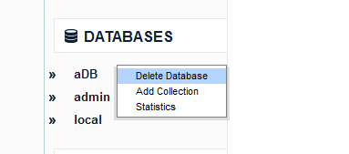
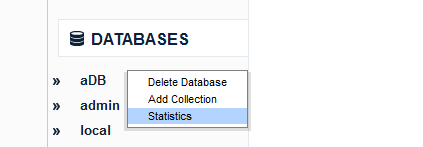

You just need to install mongoDB and ensure that mongo daemon is running. The installation process for mongoDB can be found here.
Make sure that the mongo daemon is running and proceed to the Login page of mViewer. Enter the Host and Port Number of the mongoDB.

If you haven’t been provided with credentials, the UserName and Password field can be left blank. By the way, to add a user to the admin database of mongoDB, read the help below.
To add a user, start the mongo process and follow the sequence in the screenshot below.

Now you can login with these credentials as described in the previous help section.
mViewer tool at the moment does not support the feature to add a Database
Right-click on the database name in mViewer and click Delete Database from the context menu as shown below.
Click Yes on the confirmation alert to delete the database. The database will be deleted and the confirmation of successful database deletion will be shown
Just click on the database in mViewer to view the statistics. Alternatively, you can right-click on the database name and click Statistics from the context menu as shown below.
Try to use localhost.localdomain as the host name, in fact the best idea would be to look at your hosts file and use the first value.
Try to navigate back to login page. Corrupted session just means that the token used for session tracking has been lost, no data at the db end would be compromised.
You can open up an issue at https://github.com/Imaginea/mViewer. Would be great if you attach the server logs to the issue.